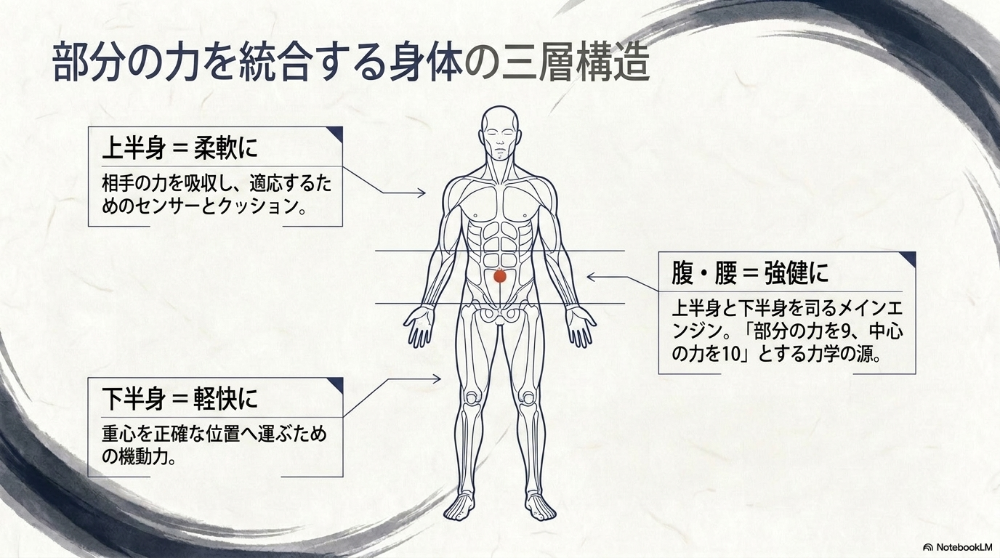
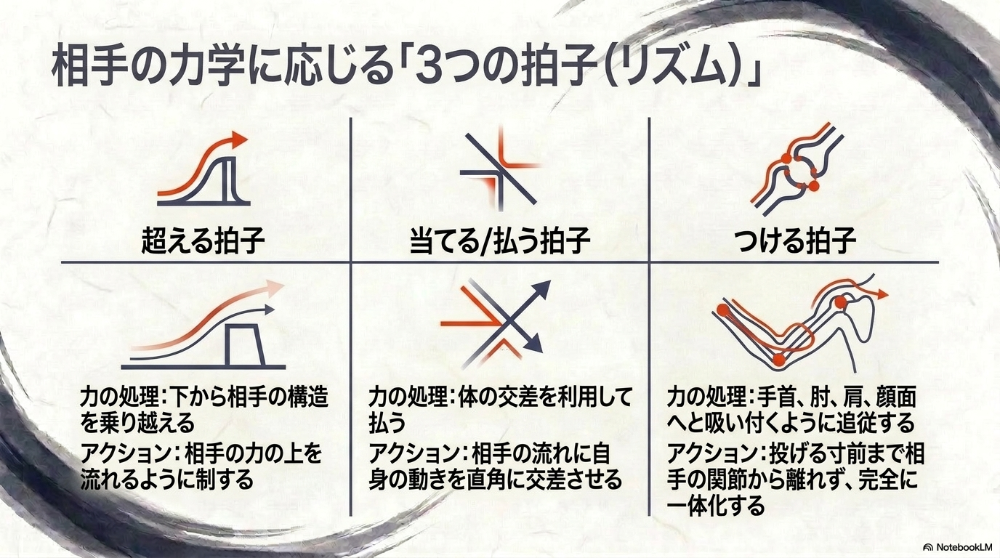
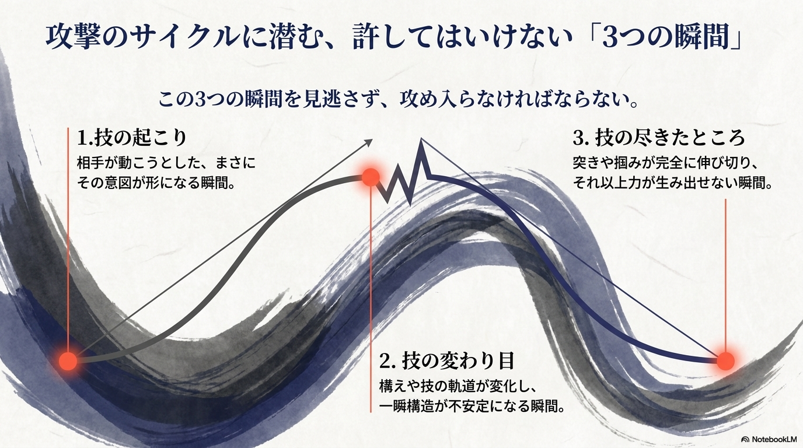

【メインビジュアル指示】
明るく清潔感のある木床の道場で、力みを抜いてのびのびと両手を広げて転換している門下生の写真を掲載。お互いが笑顔で、しかし軸の通った美しい姿勢で稽古をしている様子を切り取る。「激しさ」よりも「心地よさや調和」が前面に伝わるビジュアルにする。
日常生活にも活きる、躰を操る「3つの教え」

| 重視する要素 | 稽古における実践とアプローチ | 安野師範の言葉とのつながり |
|---|---|---|
| 上半身の柔軟性 | 肩の力を抜き、いつでも前後左右に動ける柔軟な構えと、ブレない中心（正中線）を身につけます。 | 「上半身は柔軟に」 無駄な力を抜き、状況に応じて柔軟に変化する。 |
| 胎（はら）の意識 | 腕力ではなく、下腹部（丹田）を中心とした一体感のある躰の操作と、体重を乗せる中心力を学びます。 | 「腹は強健に」 重心を低く保ち、身体の芯（腹）から技を展開する。 |
| 軽快な足さばき | 剣や杖の理合を体術に活かし、完全に伸び切らず、伸縮自在な「遊び」のある軽快なステップを徹底します。 | 「足は軽快に」 のびのびと大地を捉え、淀みなく相手の懐へ入り身する。 |
技の機会を捉える「3つの拍子（リズム）」

1
超える拍子 ：相手の下から壁を乗り越えるように、心と技を一致させて超えていくリズム。
2
当たる（払う）拍子 ：触れた瞬間の身体の流れを、腹の力で瞬時に払い・捉えるリズム。
3
つける拍子 ：相手の面、肘、手首などにピタッと吸い付くように密着し、投げる寸前まで崩しを活かすリズム。
◆ 道場が大切にする心得 ◆
この3つの機会を逃さず（許さず）、力を入れずに導き、即座に技へと繋げます。

相手の「起こり（技の出だし）」、構えや技の「変化する境界」、そして相手の力が「尽きたところ（伸び切った瞬間）」。この3つの機会を逃さず（許さず）、力を入れずに導き、即座に技へと繋げます。